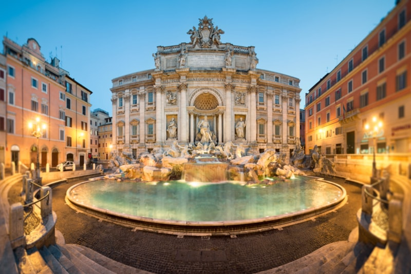

The things To See in Rome
Rome, the Eternal City, is a timeless destination that beckons travelers with its rich history, vibrant culture, and awe-inspiring landmarks. From the ancient ruins of the Roman Empire to the artistic treasures of the Renaissance, there’s a sense of grandeur at every corner. Walking through its cobblestone streets, visitors are transported back in time, where iconic monuments like the Colosseum, the Pantheon, and the Roman Forum stand proudly as testaments to centuries of history. Rome is also home to the Vatican, a center of religion and culture, as well as stunning piazzas, fountains, and museums. The charm of Rome lies not just in its landmarks but in its neighborhoods, where narrow streets open up to charming cafés and bustling markets. Whether you're admiring the frescoes in the Sistine Chapel or savoring authentic pasta in Trastevere, the city never fails to leave a lasting impression.
Their Art
A lot of people visit rome because of its beutiful art and architecture.... a paraghaph needed.
Its famous Architecture
- ig just look for thei most important art and the name and explanation maybe
- another one
- another one
- another one
How it Impacts people
After people visit rome and see all of its art and architecture they say.....